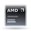

Hardwareaustausch
Dieser Artikel wurde für die folgenden Ubuntu-Versionen getestet:
Dieser Artikel ist größtenteils für alle Ubuntu-Versionen gültig.
Zum Verständnis dieses Artikels sind folgende Seiten hilfreich:
Das Austauschen oder Installieren von Hardware unter Linux ist eigentlich meist sehr problemlos. Die Installation von Treibern ist selten nötig. Der Großteil der Hardware wird direkt vom Kernel unterstützt. Doch was soll man machen, wenn es darum geht, ein bestehendes System aufzurüsten, oder sogar ganz auszutauschen. Muss man das System neu installieren?
Um es kurz zu machen: Eine Neuinstallation ist im Normalfall nicht nötig. Eine Linux-Installation verhält sich meist sehr gutmütig. Selbst nachdem das gesamte Innenleben eines Rechners getauscht wurde, kann man meist den Rechner starten und notwendige Änderungen vornehmen. Danach verhält sich das System exakt so, als ob es direkt auf diesem veränderten Rechner installiert worden wäre.
Hauptplatine ("mainboard") & CPU¶
 Der Austausch der Hauptplatine ("mainboard") inklusive der CPU bedeutet im Endeffekt einen vollständigen Austausch des Rechners. Im Prinzip kann man diese Situation mit dem Übertragen eines Abbildes einer Linux-Installation auf einen anderen Rechner vergleichen.
Moderne "Mainboards" sind üblicherweise hochintegriert, d.h. außer der CPU, dem Speicher usw. befinden sich oftmals auch die Tonausgabe, die Netzwerkschnittstelle und sogar die Grafik im sogenannten "Chipsatz" und damit mit auf der Platine. Man muss daher eventuell alle hier genannten Punkte beachten.
Arbeitsspeicher (RAM)¶
Den Arbeitsspeicher auszutauschen- oder auch um zusätzliche Riegel zu vergrößern, sollte kein Problem sein. Wird der Speicher jedoch reduziert, muss man sich in erster Linie Gedanken um die benutzte Desktopumgebung machen. „Moderne“ Umgebungen wie Unity (Ubuntu), Kde (Kubuntu) oder Gnome Shell (Ubuntu-Gnome) haben hohe Ansprüche. Der Speicher sollte nie kleiner als ca. 2 Gigabyte sein. Sparsamere Oberflächen wie Xfce (Xubuntu) oder LXDE (Lubuntu) bereiten schon ab ca. 1 Gigabyte keine Probleme mehr. Natürlich spielen aber die vom Benutzer eingesetzten Programme auch eine Rolle.
Wird der Arbeitsspeicher reichlich erhöht, kann man das System anpassen, indem die Swap-Partition bzw. -Datei vergrößert wird (siehe auch Partitionierung). Eine Faustregel spricht hier von der doppelten Größe des gesamten Arbeitsspeichers. Bei aktuellen Systemen, mit ca. 4 Gigabyte an RAM, kann mit der Regel aber gebrochen- und der "Swap"-Bereich mit nur der einfachen (statt doppelten) Größe angelegt werden.
CPU¶
Wurde nur die CPU getauscht, so braucht man als Anwender rein gar nichts zu machen. Der Rechner sollte ohne irgendwelche Änderungen (außer eventuell im BIOS) sofort starten.
Hauptplatine ("mainboard")¶
"Mainboards" an sich brauchen üblicherweise keine Treiber und sollten inklusive Festplatten-Controller usw. sofort funktionieren. Wechselt man auf eine andere Hardwarearchitektur, so muss man u.U. darauf achten, einen Kernel mit der passenden Unterstützung zu installieren. Erst dann wird das Potenzial der CPU voll ausgeschöpft. Mehr zu diesem Thema findet man unter Kernel und Rechnerarchitektur.
Der sogenannte -generic Kernel unterstützt automatisch alle Rechnerarchitekturen und Multi-Core CPUs - mit Ausnahme von 64-Bit-CPUs und PowerPCs, für die es nach wie vor eigene Kernel-Versionen gibt.
Grafikkarte¶
 Soll eine neue Grafikkarte in den Rechner eingebaut werden, so sollte man sich vorher schlau machen, was zu tun ist, wenn der XServer nicht mehr startet (siehe XServer/Problembehebung), denn mit hoher Wahrscheinlichkeit wird genau das passieren, und man landet in der (Text-)Konsole.
Soll eine neue Grafikkarte in den Rechner eingebaut werden, so sollte man sich vorher schlau machen, was zu tun ist, wenn der XServer nicht mehr startet (siehe XServer/Problembehebung), denn mit hoher Wahrscheinlichkeit wird genau das passieren, und man landet in der (Text-)Konsole.
Ebenso sollte man sich vor dem Austausch informieren, ob die Grafikkarte eventuell zusätzliche Treiber benötigt. So kann man diese vor dem Austausch der Karte installieren und nach dem Austausch der Karte den XServer gleich "richtig" konfigurieren.
Ist die Grafikkarte getauscht und der Rechner neu gestartet, so muss man nun den Xserver neu konfigurieren. Gleiches gilt übrigens auch, wenn zwar die Grafikkarte erhalten bleibt, man aber das "Mainboard" austauscht. In der Konfigurationsdatei des XServers steht, wie die Karte exakt anzusprechen ist. Ändert sich hier etwas, so muss diese Konfiguration erneuert werden.
Bei "Onboard-Grafik" übernimmt der Chipsatz der Hauptplatine auch die Grafikausgabe. Beim Nachrüsten mit einer AGP-/PCI-/PCI-Express-Grafikkarte ist darauf zu achten, dass der Eintrag in der Datei xorg.conf, Abschnitt „Device“, für den Bus-Identifier (Busid) verändert wird. Der neue Bus-Identifier wird auch bei einer Neukonfiguration des Xservers nicht automatisch erkannt. Wenn im BIOS die alte "onboard"-Grafik deaktiviert ist, sollte es ausreichen, den Eintrag für den Bus-Identifier frei zulassen.
Netzwerkkarte¶
 Bei WLAN-Karten gibt es stets eine höhere Wahrscheinlichkeit, dass Treiber manuell installiert werden müssen.
Bei WLAN-Karten gibt es stets eine höhere Wahrscheinlichkeit, dass Treiber manuell installiert werden müssen.
Ethernet-Karten (über Kabel) sollten sofort funktionieren. Allerdings kann es vorkommen, dass bei einem Austausch die Netzwerkkarte nun eth1 anstatt eth0 heißt, obwohl sie die einzige Netzwerkkarte im Rechner ist. Sollte dieser Umstand Probleme bereiten, lässt sich die Karte umbenennen:
Über den Befehl [1]
ifconfig
bekommt man die "Hardware-Adresse" der Netzwerkkarte heraus
...
eth1 Protokoll:Ethernet Hardware Adresse 00:A0:24:51:8F:F4
inet Adresse:192.168.0.1 Bcast:192.168.0.255 Maske:255.255.255.0
inet6 Adresse: fe80::2a0:24ff:fe51:8ff4/64 Gültigkeitsbereich:Verbindung
UP BROADCAST RUNNING MULTICAST MTU:1500 Metric:1
RX packets:175457479 errors:0 dropped:0 overruns:115 frame:0
TX packets:299948934 errors:0 dropped:0 overruns:0 carrier:0
Kollisionen:0 Sendewarteschlangenlänge:1000
RX bytes:3027004147 (2.8 GiB) TX bytes:1066916927 (1017.4 MiB)
Interrupt:10 Basisadresse:0xcf80
...in diesem Fall ist dies also die "00:A0:24:51:8F:F4". Diese Nummer trägt man nun bei Systemen bis einschließlich Ubuntu 15.04 in die Datei /etc/udev/rules.d/70-persistent-net.rules ein [2]:
SUBSYSTEM=="net", DRIVERS=="?*", ATTRS{address}=="00:a0:24:51:8f:f4", ATTRS{type}=="1", NAME="eth0"Spätestens ab dem nächsten Neustart findet man die Netzwerkkarte unter der alten Bezeichnung wieder. Systeme ab Ubuntu 15.10 nutzen dagegen systemd zur Verwaltung der Netzwerkkarte (siehe dort).
Audio-Geräte ("sound")¶
 Audio-Geräte (onboard, Einsteck-Karten, USB-Adapter usw.) benötigen unter Linux üblicherweise keine extra Treiber. Sollte es dennoch zu Problemen kommen, so findet man hier und hier Hilfe.
Audio-Geräte (onboard, Einsteck-Karten, USB-Adapter usw.) benötigen unter Linux üblicherweise keine extra Treiber. Sollte es dennoch zu Problemen kommen, so findet man hier und hier Hilfe.
Hinweis:
Halbwegs moderne Hauptplatinen haben meist Chips (HD-Audio, IHD, Azalia, AC97 etc.) für die Audioein- und ausgabe. Wird trotzdem eine echte Soundkarte eingebaut- und wird das OnBoard-Audiogerät dadurch nicht mehr benötigt, empfiehlt es sich, dieses im BIOS zu deaktivieren. Ansonsten wird man zwangsläufig das Problem haben, dass Programme die falsche Hardware ansprechen.
Sonstige Hardware¶
 Sonstige Hardware wie Bluetooth-Sticks, Scanner usw. brauchen ebenfalls nicht neu eingebunden zu werden. Hat diese Hardware mit der zuvor installierten Hardware funktioniert, so sollte sie jetzt wieder sofort funktionieren. Gab es zuvor Probleme, so ist es unwahrscheinlich, dass diese durch den Hardwarewechsel gelöst wurden.
Sonstige Hardware wie Bluetooth-Sticks, Scanner usw. brauchen ebenfalls nicht neu eingebunden zu werden. Hat diese Hardware mit der zuvor installierten Hardware funktioniert, so sollte sie jetzt wieder sofort funktionieren. Gab es zuvor Probleme, so ist es unwahrscheinlich, dass diese durch den Hardwarewechsel gelöst wurden.
 Übersichtsartikel
Übersichtsartikel- Erstellt mit Inyoka
-
 2004 – 2017 ubuntuusers.de • Einige Rechte vorbehalten
2004 – 2017 ubuntuusers.de • Einige Rechte vorbehalten
Lizenz • Kontakt • Datenschutz • Impressum • Serverstatus -
Serverhousing gespendet von